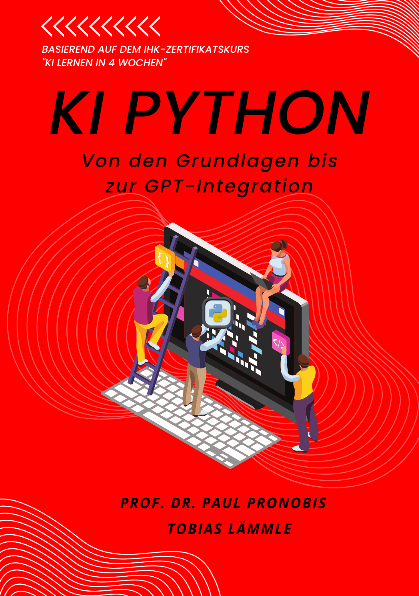

KI Python
Von den Grundlagen bis zur GPT-Integration
Vorwort

Liebe Leserin, lieber Leser,
herzlich willkommen in der faszinierenden Welt der Künstlichen Intelligenz und Python! Sie halten nicht nur ein Buch in den Händen, sondern den Schlüssel zu einer der gefragtesten Kompetenzen unserer Zeit. Die Idee zu diesem Lehrbuch entstand direkt aus unserem IHK-Zertifikatskurs “KI lernen in 4 Wochen”, den wir mit der IHK Rhein-Neckar entwickelt haben. Unser Ziel war es von Anfang an, ein Lern-Erlebnis zu schaffen, das sowohl praxisorientiert als auch für absolute Einsteiger verständlich ist.
Wir glauben fest daran, dass Programmieren heute anders gelernt wird als noch vor wenigen Jahren. Anstatt alleine vor dem Bildschirm zu sitzen und über komplexen Code zu grübeln, nutzen wir die Kraft der KI, um den Lernprozess zu beschleunigen. In diesem Buch werden Sie lernen, wie Sie KI-gestützte Werkzeuge wie Chatbots als Ihre persönlichen Tutoren einsetzen können, die Ihnen rund um die Uhr mit Rat und Tat zur Seite stehen.
Dieses Buch folgt exakt der Struktur unseres IHK-Kurses und führt Sie Schritt für Schritt von den Grundlagen der Programmierung bis hin zur Entwicklung eigener KI-Anwendungen. Jedes Kapitel ist eine Lerneinheit aus dem Kurs, angereichert mit praktischen Beispielen, Übungen und Projekten, die Ihnen helfen, das Gelernte direkt anzuwenden und zu festigen.
Wir möchten Sie ermutigen, aktiv mit diesem Buch zu arbeiten. Programmieren lernt man am besten durch Ausprobieren, Experimentieren und ja, auch durch Fehler. Sehen Sie dieses Buch als Ihren persönlichen Coach, der Sie auf Ihrer Reise begleitet und Ihnen die Werkzeuge an die Hand gibt, um die digitale Zukunft aktiv mitzugestalten.
Wir wünschen Ihnen viel Erfolg und vor allem viel Freude beim Entdecken der Welt von KI und Python!
Herzliche Grüße,
Prof. Dr. Paul Pronobis & Tobias Lämmle
Über die Autoren
Prof. Dr. Paul Pronobis (LinkedIn-Profil)
Prof. Dr. Paul Pronobis ist ordentlicher Professor an der Freien Universität Bozen und verbindet als international anerkannter Wissenschaftler fundierte betriebswirtschaftliche Expertise mit innovativen KI-Anwendungen. Seine Forschung und Lehre konzentrieren sich auf die Schnittstelle zwischen Rechnungswesen, Datenanalyse und künstlicher Intelligenz. Vor seiner akademischen Karriere sammelte er wertvolle Praxiserfahrung in der Industrie. Diese Verbindung von akademischer Exzellenz und praktischer Erfahrung ermöglicht es ihm, komplexe Konzepte praxisnah und verständlich zu vermitteln.
Tobias Lämmle (LinkedIn-Profil)
Tobias Lämmle ist Software-Architekt und Senior Software Engineer bei der Finanz Informatik Solutions Plus GmbH mit über 20 Jahren Erfahrung in der Entwicklung skalierbarer Softwarelösungen und KI-Systeme. Seine Expertise umfasst Machine Learning, Cloud-Architekturen und moderne Softwareentwicklung. Als gefragter Dozent gibt er sein Wissen an renommierten Institutionen wie der Freien Universität Bozen und der ESCP Business School weiter. Er zeichnet sich durch seine Fähigkeit aus, komplexe technische Konzepte didaktisch aufzubereiten und praxisnah zu vermitteln.
Einleitung: Der IHK-Kurs als Buch
Dieses Buch ist mehr als nur ein Lehrbuch – es ist Ihr persönlicher IHK-Zertifikatskurs im Buchformat. Wir haben die bewährte Struktur und die praxisorientierten Inhalte unseres erfolgreichen Kurses “KI lernen in 4 Wochen” direkt in dieses Buch übertragen, um Ihnen ein flexibles und effektives Lernerlebnis zu ermöglichen.
Für wen ist dieses Buch?
Dieses Buch richtet sich an alle, die den Einstieg in die Welt der Künstlichen Intelligenz und Programmierung suchen, unabhängig von ihren Vorkenntnissen. Sie sind hier genau richtig, wenn Sie:
- Berufstätig sind und sich zukunftssichere Kompetenzen in den Bereichen Datenanalyse und KI aneignen möchten.
- Studierende sind und Ihr theoretisches Wissen durch praktische Programmierkenntnisse ergänzen wollen.
- Neugierig sind und verstehen möchten, wie KI-Systeme funktionieren und wie Sie diese selbst gestalten können.
- Teilnehmer eines IHK-Kurses rund um das Thema “Programmierung” sind und ein umfassendes Nachschlagewerk suchen.
Wie dieses Buch funktioniert
Wir haben dieses Buch so strukturiert, dass es Sie systematisch vom Anfänger zum kompetenten Anwender führt. Jedes Kapitel baut auf dem vorherigen auf und ist in überschaubare Lerneinheiten unterteilt, sodass Sie Ihr Lerntempo individuell anpassen können. Ihre Lernreise ist in sieben aufeinander aufbauende Kapitel strukturiert, die Sie systematisch von den Grundlagen zur praktischen KI-Anwendung führen:
Kapitel 1: KI Python lernen
Ihr Einstieg in die Programmierung beginnt hier. Sie lernen die Python-Grundlagen kennen: Variablen, Datentypen, Text-Verarbeitung und die ersten Schritte mit Code. Das berühmte “Hello World!”-Programm wird Ihr erster Erfolg sein.
Kapitel 2: Funktionen
Hier entdecken Sie, wie Sie Ihren Code organisieren und wiederverwendbar machen. Sie lernen, eigene Funktionen zu schreiben, Parameter zu verwenden und Code professionell zu dokumentieren. Lambda-Funktionen runden das Kapitel ab.
Kapitel 3: Bedingungen & Schleifen
Die Logik Ihrer Programme kommt ins Spiel. Sie meistern if-else-Anweisungen, Vergleichsoperatoren und Schleifen. Als Höhepunkt entwickeln Sie Ihr erstes vollständiges Python-Spiel.
Kapitel 4: Datenstrukturen
Listen, Tupel und Dictionaries werden zu Ihren Werkzeugen für komplexere Datenverarbeitung. Sie lernen auch, mit Fehlern umzugehen und entwickeln eine praktische Benutzerverwaltung.
Kapitel 5: Pandas
Der Einstieg in die professionelle Datenanalyse. Sie lernen, wie Sie CSV-Dateien laden, Daten filtern und bearbeiten, sowie grundlegende Statistiken berechnen. Eine vollständige Analyse des Titanic-Datensatzes zeigt Ihnen, was möglich ist.
Kapitel 6: Arbeiten mit GPT
Das Herzstück der KI-Integration. Sie lernen APIs kennen, arbeiten mit OpenAI’s GPT-Modellen und entwickeln einen intelligenten Aufgaben-Manager. Ethische Aspekte im Umgang mit KI werden ebenfalls behandelt.
Kapitel 7: Abschlusstest
Ihr Wissen wird in einem umfassenden Test geprüft. Von Grundlagen bis zur Sentiment-Analyse zeigen Sie, was Sie gelernt haben. Bei erfolgreichem Abschluss erhalten Sie wertvolle Hinweise für Ihre weitere Laufbahn.
Unser Lernkonzept: Aktiv statt passiv
Dieses Buch basiert auf neuesten Erkenntnissen der Lernforschung: Nachhaltiges Lernen entsteht nicht durch passives Konsumieren, sondern durch aktives Anwenden und Reflektieren.
Unser bewährtes Konzept – die aktive Lernschleife – begleitet Sie durch jedes Kapitel mit vier Phasen: Verstehen, Anwenden, Austauschen und Hilfe holen. Die Details zu diesem Lernkonzept finden Sie in Kapitel 1.5.
Verstehen der Call-Out-Boxen
Zur optimalen Orientierung während des Lernprozesses verwenden wir verschiedene farbige Informationsboxen (Call-Outs), die Ihnen unterschiedliche Arten von Inhalten signalisieren:
Enthalten wichtige Grundkonzepte, Definitionen und Erklärungen. Diese Informationen sind zentral für das Verständnis des jeweiligen Themas.
Bieten praktische Empfehlungen, Best Practices und hilfreiche Hinweise, die Ihnen das Lernen erleichtern und Ihre Programmierfähigkeiten verbessern.
Heben besonders wichtige Punkte hervor, die Sie unbedingt beachten sollten. Hier finden Sie zentrale Lernziele und entscheidende Konzepte.
Warnen vor häufigen Fehlern und Problemen. Diese Hinweise helfen Ihnen, typische Stolpersteine zu vermeiden.
Markieren Übungsaufgaben, Projekte und praktische Herausforderungen. Hier können Sie Ihr Wissen aktiv anwenden und vertiefen.
Treten Sie unserer Community bei!
Lernen wird noch effektiver, wenn Sie sich mit Gleichgesinnten austauschen können. Deshalb laden wir Sie herzlich ein, Teil unserer aktiven und Lerngemeinschaft zu werden:
Business Data Professional Community
In unserer Community finden Sie:
- Direkten Austausch mit anderen Lernenden und Experten
- Hilfe bei Problemen durch erfahrene Community-Mitglieder
- Zusätzliche Ressourcen und Materialien zum Kurs
- Networking-Möglichkeiten für Ihre berufliche Entwicklung
- Updates und News zu neuen Entwicklungen in KI und Python
- Projektgalerien wo Sie Ihre eigenen Arbeiten präsentieren können
Die Community ist kostenlos und steht allen Lesern dieses Buches offen. Zögern Sie nicht, Fragen zu stellen, Ihre Fortschritte zu teilen oder anderen bei ihren Herausforderungen zu helfen.
Was Sie am Ende können werden
Nachdem Sie dieses Buch durchgearbeitet haben, werden Sie in der Lage sein:
- Python-Skripte zu schreiben, um Aufgaben zu automatisieren.
- Daten zu analysieren und wertvolle Einblicke zu gewinnen.
- KI-Modelle wie GPT in Ihre eigenen Anwendungen zu integrieren.
- Eigene KI-gestützte Lösungen für reale Probleme zu entwickeln.
Wir sind davon überzeugt, dass dieses Buch Ihnen nicht nur das nötige Wissen vermitteln, sondern auch die Begeisterung für die unendlichen Möglichkeiten von KI und Python wecken wird. Lassen Sie uns gemeinsam diese spannende Reise beginnen!
Springen Sie direkt zu Kapitel 1 und beginnen Sie mit dem Programmieren!